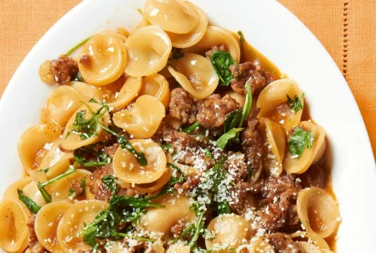

This delicious orecchiette pasta recipe only has a handful of ingredients, is very cheap to make, and most importantly, only uses one pan or pot for the entire procedure. Every year when it's time to go back to school I get inundated with requests from students to post recipes that are super-easy, cost pennies, and require a bare minimum of kitchen equipment — this is one of them!

Prep Time:15 mins
Cook Time: 25 mins
Total Time: 40 mins
Servings: 2